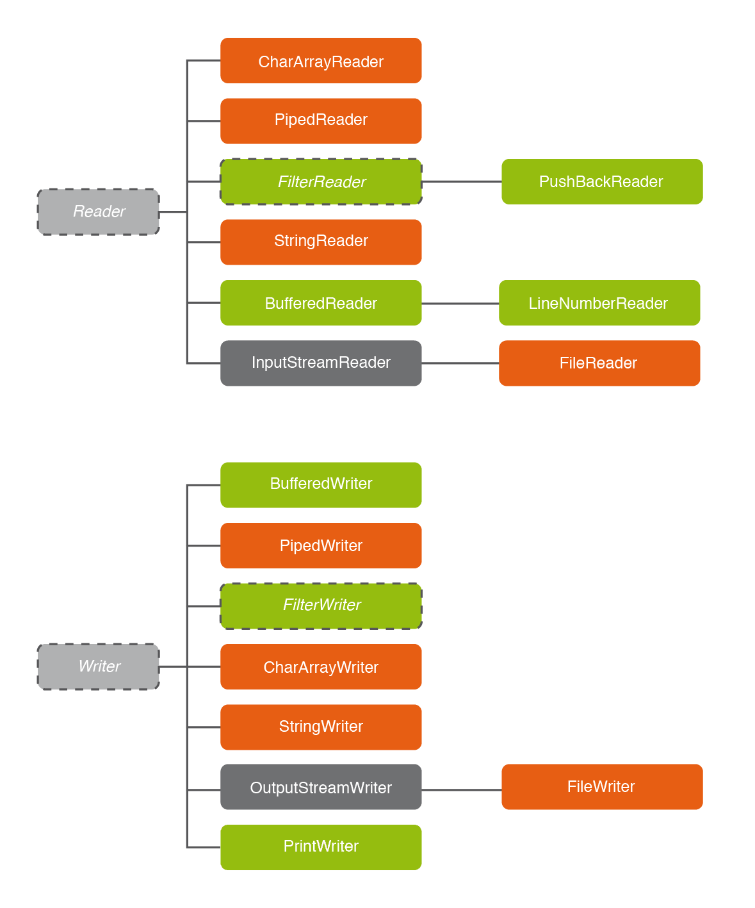

2 - Manipulació dels fluxos de dades
En Java, i per tant també en Kotlin, no tindrem una única classe per a manipular els fluxos de dades i així arribar al contingut dels fitxers. És una cosa que de vegades se li critica a Java, que hi ha una jerarquia molt extensa de fluxos, i són moltes classes a recordar i utilitzar. Per contra fa que siga molt versàtil. En l'últim punt del tema veurem la simplificació que ens proposa Kotlin.
Aquestes classes es trobaran en dues jerarquies, la dels fluxos orientats a bytes i la dels fluxos orientats a caràcters.
- Si les nostres dades són numèriques o de qualsevol altre tipus que puguem imaginar (imatges per exemple), ens convindran les primeres.
- Si la informació és de caràcters, haurem d'utilitzar la segona jerarquia.
La raó de que existesca aquesta segona jerarquia orientada a caràcters és la multitud de sistemes de codificació existents. Com havíem comentat en la pregunta anterior, Java utilitza internament codificació UNICODE de 16 bits (UTF-16), on cada caràcter ocupa 16 bits i així poder suportar tots els llenguatges com el grec, àrab, ciríl·lic, xinès, .... Però UTF-8 està molt estés, i en aquesta codificació de vegades un caràcter ocupa 8 bits, i de vegades 16. I no podem oblidar altres sistemes de codificació, com ASCII, ISO-8859, ... La jerarquia de classes orientades a caràcter suportarà totes les codificacions.
2.1 - Fluxos orientats a bytes - Classes
L'arrel, la base de tota la jerarquia són InputStream i OutputStream , respectivament per a fluxos d'entrada i d'eixida. Comentarem els fluxos d'entrada, i els d'eixida són totalment paral·lels.
La super-classe InputStream servirà per a fer l'entrada des de qualsevol dispositiu: fitxer, array de bytes, una tuberia (per a dur dades des d'una altra aplicació)... Totes les classes d'entrada heretaran d'ella, i serviran per especificar exactament d'on (per exemple un fitxer: FileInputStream) o per a donar alguna altra funcionalitat, com anirem veient a poc a poc. D'aquesta manera, els mètodes que es defineixen s'hauran d'implementar per les classes que hereten de la super-classe i assegura una uniformitat, siga quina siga la font.
Fem una ullada ràpida a la jerarquia de classes en la següent imatge:

De moment mirem únicament les que estan en color taronja , que especificaran quina serà la font de dades:
| Classe | Explicació |
|---|---|
| FileInputStream | Per a llegir informació d'un fitxer |
| PipedInputStream | Per a llegir des d'una tuberia (és a dir informació que ve d'un altre programa) |
| ByteArrayInputStream | L'entrada serà un array de bytes |
| SequenceInputStream | Servirà per enllaçar dues entrades en una de sola, seqüencialment |
Evidentment ens centrarem en la primera, que és la que més ens interessa per a la permanència de les dades, però posarem algun exemple de les altres (concretament ByteArrayInputStream).
Els fluxos d'eixida són molt molt pareguts, tots ells heretaran de OutputStream :
| Classe | Explicació |
|---|---|
| FileOutputStream | Per a guardar informació en un fitxer |
| PipedOutputStream | Per a traure cap a una tuberia (és a dir informació que anirà a un altre programa) |
| ByteArrayOutputStream | L'eixida serà un array de bytes |
Constructors de FileInputStream
Com hem comentat, qui més ens interessa de tots els InputStream és el FileInpuStream , per a poder accedir a la informació d'un fitxer. Dos són els constructors de FileInputStream:
- FileInputStream (f : File): en el paràmetre se li passa un File (dels vistos en el tema anterior), que ha de ser una referència al fitxer.
- FileInputStream (nom_f : String): en el paràmetre se li passa un String amb el nom (i la possible ruta) del fitxer. Ens permetrà fer referència al fitxer de forma més ràpida, sense haver de passar per un File.
Constructors del FileOutputStream
Canviaran lleugerament respecte als d'entrada, ja que a més de fer referència al fitxer, opcionalment podrem d'especificar la manera d'escriure en el fitxer en cas que aquest ja existesca: bé afegint al final, o bé destruint la informació anterior. Aquestos són els constructors:
- FileOutputStream (f : File): en el paràmetre se li passa un File. Si no existia, el crearà; si ja existia esborrarà el contingut. En ambdós casos l'obrirà en mode escriptura.
- FileOutputStream (nom_f : String): igual que en l'anterior, però en el paràmetre se li passa un String amb el nom (i la possible ruta) del fitxer.
- FileOutputStream (f : File, afegir: Boolean) : és com el primer, però si en el segon paràmetre se li passa true , en cas que ja existira el fitxer, la informació s'afegirà al final, en compte de substituir el que ja hi havia. Si en aquest paràmetre se li passa false s'esborrarà el contingut anterior (com en el primer cas).
- FileOutputStream (nom_f : String,__afegir__: Boolean) : igual que en l'anterior, però en el primer paràmetre se li passa un String amb el nom (i la possible ruta) del fitxer.
2.1.1 - Mètodes del InputStream
Nota
El primer mètode que hem de veure del InputStream és aquell que ens permet una lectura senzilla:
- int read() : llig el següent byte del flux d'entrada i el retorna com un enter. Si no hi ha cap byte disponible perquè s’ha arribat al final de la seqüència de bytes, es retornarà -1. Si no es pot llegir el següent byte per alguna causa (per exemple si després d'arribar al final intentem llegir un altre byte, o perquè es produeix un error en llegir l'entrada) es llançarà una excepció del tipus IOException. Es tracta d’un mètode abstracte, que les classes especifiques sobreescriuran adaptant-lo a una font de dades concreta (un fitxer, un array de bytes, ...). I observeu com es tracta d'una lectura seqüencial. Comencem pel primer byte del fitxer, i a cada read llig el següent byte fins arribar al final. Els tractaments que veurem en aquest tema seran sempre seqüencials.
Abans de veure altres mètodes, mirem un exemple. Per a aquest exemple fa falta un fitxer anomenat f1.txt , que pot ser un fitxer de text creat amb qualsevol editor senzillet, com per exemple gedit o el Bloc de notes. Ha d'estar en el directori del projecte (el projecte Tema2), i així no caldrà posar la ruta. Per exemple podríem posar el següent contingut:
Hola, què tal?
El que farà el programa és traure per pantalla caràcter a caràcter (en línies diferents). L'heu de copiar en un fitxer anomenat Exemple_2_01.kt dins d'un paquet anomenat exemples en el projecte del Tema 2:
package exemples
import java.io.FileInputStream
fun main(args: Array<String>){
val f_in = FileInputStream("f1.txt")
var c = f_in.read()
while (c!=-1){
println(c.toChar())
c = f_in.read()
}
f_in.close()
}
El resultat en Ubuntu serà aquest:
H
o
l
a
,
q
u
Ã
¨
t
a
l
?
Potser en Windows si que apareguen bé tots els caràcters, ja que utilitza per defecte una altra codificació. Però no li donarem ara importància al fet que no apareguen bé els caràcters especials. Observeu com estem utilitzant un InputStream , concretament un FileInputStream , per a llegir un fitxer de text. Açò no és el més apropiat, com ja havíem comentat abans, sinó que hauríem d'utilitzar algun flux orientat a caràcters, i no orientat a bytes. El programa funcionarà si utilitzem codificació ASCII (o ISO-8859) ja que cada caràcter es guarda en un byte. Si ens despistem i el fitxer el gaurdem en UTF-8, no eixiran bé els caràcters com ç, ñ o vocals accentuades (que es guarden en 2 bytes). I si el guardem en UTF-16, encara eixirà pitjor.
Hem utilitzat el constructor que accepta un String com a paràmetre. Queda més curt, però seria totalment equivalent substituir la construcció anterior per aquestes dues línies
val f = File("f1.txt")
val f_in = FileInputStream(f)
El read obté un enter, que després l'intentem convertir en caràcter. Finalitzem quan l'enter és -1.
Aquest segon exemple té l'entrada no des d'un fitxer, sinó des d'un ByteArrayInputStream. A banda de que l'hem d'inicialitzar diferent, podem observar com el tractament posterior és idèntic. Copieu-lo en un fitxer anomenat Exemple_2_02.kt :
package exemples
import java.io.ByteArrayInputStream
fun main(args: Array<String>) {
val ent_1 = "Aquest és un byte array"
val f_in = ByteArrayInputStream(ent_1.toByteArray())
var c = f_in.read()
while (c != -1) {
println(c.toChar())
c = f_in.read()
}
f_in.close()
}
Una altra vegada els caràcters especial eixiran malament, ja que en compte de un InputStream (en aquest cas ByteArrayInputStream) el més adequat seria un flux orientat a caràcters, però com a exemple sí que ens val.
Mirem un tercer exemple, per veure el SequenceInputStream , on es poden enganxar de forma sequencial diferents InputStream. Després d'aquest exemple ja ens centrarem en els fitxers, que és el que ens interessa. Copieu-lo en un fitxer anomenat Exemple_2_03.kt :
package exemples
import java.io.ByteArrayInputStream
import java.io.FileInputStream
import java.io.SequenceInputStream
fun main(args: Array<String>) {
val f1 = FileInputStream("f1.txt")
val ent_1 = "Aquest és un byte array"
val f2 = ByteArrayInputStream(ent_1.toByteArray())
val f_in = SequenceInputStream(f1,f2)
var c = f_in.read()
while (c != -1) {
println(c.toChar())
c = f_in.read()
}
f_in.close()
}
Altres mètodes del InputStream són:
- int read(buffer : ByteArray): llig un número determinat de bytes de l'entrada, guardant-los en el paràmetre (que actuarà com un buffer). El número de bytes llegits serà com a màxim la grandària del buffer, encara que podria ser menor (si no hi ha prou bytes, per exemple). El mètode tornarà el número de bytes que realment s'han llegit com un enter. Si no hi haguera cap byte disponible, es retornarà -1.
- int available() : indica quants bytes hi ha disponibles per a la lectura. Sobretot serviria com a condició de final de bucle (si hi ha 0 bytes disponibles, és que ja hem acabat), encara que hi ha altres maneres de fer la condició de final de bucle.
- long skip(despl : Long): salta, despreciant-los, tant bytes com indica el paràmetre. Podria ser que no puguera saltar el número de bytes especificat per diferents raons. Torna el número de bytes realment saltats.
- int close() : tanca el flux de dades.
Mirem un altre exemple, utilitzant ara el buffer com a paràmetre del read. Fa falta que existesca un fitxer anomenat f2.txt en l'arrel del projecte, com es comenta després. Copieu-lo en un fitxer anomenat Exemple_2_04.kt :
package exemples
import java.io.FileInputStream
fun main(args: Array<String>) {
val f_in = FileInputStream("f2.txt")
var buffer = ByteArray(30)
var n = f_in.read(buffer)
while (n != -1) {
for (i in 0..n - 1)
print(buffer[i].toChar())
println("")
n = f_in.read(buffer)
}
f_in.close();
}
Es llegiran els caràcters de 30 en 30, ja que el buffer és d'aquesta grandària. Com que es guarda en un buffer de bytes (bytes, no caràcters), haurem de recórrer aquest buffer (fins el número de caràcters llegits, que és n) convertint cada byte en caràcter. Hem suposat que en el fitxer f2.txt tenim un text prou llarg com per a veure el funcionament. Si per exemple el contingut de f2.txt és aquest:
Hola. Aquest és un text més llarg, per veure com gestiona els bytes amb un
buffer de 30 caràcters.
Com que ho llegim des d'un InputStream, els caràcters especials potser no
isquen bé.
Aquesta seria l'eixida:
Hola. Aquest ￃﾩs un text mￃﾩs
llarg, per veure com gestiona
els bytes amb un buffer de 30
carￃﾠcters.
Com que ho llegim
des d'un InputStream, els carￃ
ﾠcters especials potser no isq
uen bￃﾩ.
Recordeu que estem llegint un fitxer de text des d'un InputStream, cosa gens convenient ja que els caràcters com ç, ñ, o vocals accentuades difícilment podrem fer que apareguen bé. Ho arreglarem amb els fluxos orientats a caràcter.
2.1.2 - Mètodes del OutputStream
Comencem també pel més senzill i primordial, el mètode que escriu un byte (recordeu que estem en fluxos orientats a bytes).
- void write(byte : Int) : escriu el byte passat com a paràmetre en el flux d'eixida. Encara que el paràmetre és de tipus int, només s'escriurà un byte. Si no es poguera fer l'escriptura per qualsevol motiu (per exemple, disc ple), es llançarà una excepció de tipus IOException.
Igual que en l'apartat anterior, anem a veure un exemple senzill d'utilització, en què guardarem en un fitxer el contingut d'una cadena (encara que ja sabem que no és el més apropiat utilitzar fluxos orientats a bytes per a informació de caràcters).
En aquest primer exemple del OutputStream treballarem sobre un fitxer inexistent. Es podrà comprovar que el resultat serà la creació del fitxer amb el contingut. Hem de fer constar que si no es tanca el fitxer (millor dit el flux d'eixida) podria ser que no es guardara res en el fitxer. Per tant tancar és una operació ben important que no hem d'oblidar.
Copieu el següent codi en un fitxer anomenat Exemple_2_11.kt :
package exemples
import java.io.FileOutputStream
fun main(args: Array<String>) {
val text = "Contingut per al fitxer."
val f_out = FileOutputStream("f3.txt")
for (c in text)
f_out.write(c.toInt())
f_out.close()
}
Observeu com hem convertit cada caràcter a Int per a que puga funcionar, ja que el mètode write() accepta un enter.
En el constructor del OutputStream no hem indicat el segon paràmetre, aquell que indicava si era per a afegir o no, i per tant si no existia el fitxer el crearà, però si ja existia el fitxer, destruirà el seu contingut i el substituirà pel nou contingut. Per això si tornem a executar el programa, tindrem el mateix resultat.
Contingut per al fitxer.
La codificació del fitxer haurà segut la que tinga per defecte el Sistema Operatiu, que en el cas d'Ubuntu és UTF-8, i en el cas de Windows és ISO-8859.
Anem a provar a substituir el constructor, posant ara
val f_out = FileOutputStream("f3.txt",true)
Si l'executem una altra vegada, veurem que afegirà al final, sense destruir el que ja hi havia.
Contingut per al fitxer.Contingut per al fitxer.
Altres mètodes del OutputStream són:
- void write(buffer : ByteArray) : escriu el contingut de l'array de bytes al fitxer. Cal que buffer no siga nul, o provocarem un error.
- void write(buffer : ByteArray, pos : Int, llarg : Int) : escriu al fitxer el contingut de l'array que està a partir de la posició pos i tants bytes com assenyale llarg.
- void flush() : Guardar les dades en un fitxer és una operació relativament lenta, ja que és accedir a un dispositiu lent (millor dit, no tan ràpid com la memòria). És habitual que s'utilitze una memòria intermèdia per a que les coses no vagen tan lentes (com si fóra una caché). Però potser que les dades no estiguen guardades encara en el fitxer, sinó que encara estiguen en aquesta caché. El mètode flush obliga a escriure els bytes que queden encara a la caché físicament al fitxer d'eixida.
- void close() : tanca el flux d'eixida, alliberant els recursos. Si quedava alguna cosa en la caché, es guardarà al fitxer i es tancarà el flux.
En aquest exemple es copia el contingut del fitxer f2.txt en el fitxer f4.txt , però en compte d'anar byte a byte, anirem de 30 en 30, amb un buffer de 30 posicions. Podríem cometre l'error de la línia 13 del següent programa, la del comentari, d'escriure sempre els 30 caràcters. Copieu el següent codi en un fitxer anomenat Exemple_2_12.kt :
package exemples
import java.io.FileInputStream
import java.io.FileOutputStream
fun main(args: Array<String>) {
val f_in = FileInputStream("f2.txt")
val f_out = FileOutputStream("f4.txt")
var buffer = ByteArray(30)
var num = f_in.read(buffer)
while (num != -1) {
f_out.write(buffer) // açò és un error
num = f_in.read(buffer)
}
f_in.close();
f_out.close();
}
D'aquesta manera, l'última vegada que és llig és molt possible que no hi hagen exactament 30 caràcters. Si hi ha menys de 30 caràcters, només es llegiran els que queden al principi del buffer, i en la resta del buffer hi ha la informació anterior, la de la penúltima lectura. En definitiva, tenim "basura", i si no ho controlem el resultat no serà el correcte. Aquest ser`el contingut de f4.txt :
Hola. Aquest és un text més llarg, per veure com gestiona els bytes amb un
buffer de 30 caràcters.
Com que ho llegim des d'un InputStream, els caràcters especials potser no
isquen bé.
pecials potser no isq
Ha eixit d'aquesta manera perquè l'última vegada només s'han llegit 9 bytes. Els 21 restants tenen la informació encara de la penúltima lectura.
Per a fer-lo de forma correcta, ens aprofitem de que read(buffer) torna el número de bytes realment llegits, per escriure exactament aquest número. Per tant substituirem la línia 13, la del comentari, per aquesta altra:
f_out.write(buffer,0,num) // ara sí que funcionarà bé
Ara el contingut de f4.txt serà idèntic al de f2.txt
Nota important
2.2 - Fluxos orientats a caràcters - Classes
Treballar amb caràcters implica una dificultat apreciable, a causa sobretot de la diversitat de codificacions existents.
Per poder solucionar-ho, Java disposa de dues jerarquies, una d'entrada i una d'eixida, diferents de les que ja hem vist per a bytes (que eren InputStream i OutputStream). Aquestes jerarquies per a caràcters seran molt semblants a les de bytes, però sempre orientades a caràcters. Kotlin, per heretar de Java, també les tindrà, encara que com veurem en l'última pregunta, podrem simplificar les coses.
Igual que en els casos anteriors, tindrem unes classes abstractes, Reader i Writer , que no es poden instanciar directament (no podrem crear un objecte d'aquestes classes). Serviran per a homogeneïtzar tots els fluxos d'entrada i d'exida orientats a caràcter.
La super-classe Reader servirà per a fer l'entrada des de qualsevol dispositiu: fitxer, array de caràcters, una canonada ("tuberia", per a dur dades des d'una altra aplicació). Totes les classes d'entrada heretaran d'ella, i serviran per especificar exactament d'on (per exemple un fitxer: FileReader) o per a donar alguna altra funcionalitat, com anirem veient a poc a poc. D'aquesta manera, els mètodes que es defineixen s'hauran d'implementar per les classes que hereten d'ella i assegura una uniformitat, siga quina siga la font.
Fem una ullada ràpida a la jerarquia de classes en la següent imatge:

De moment mirem únicament les que estan en color taronja , que especificaran quina serà la font de dades:
| Classe | Explicació |
|---|---|
| FileReader | Per a llegir caràcters d'un fitxer |
| PipedReader | Per a llegir des d'una tuberia (és a dir informació que ve d'un altre programa) |
| CharArrayReader | L'entrada serà un array de caràcters |
| StringReader | L'entrada serà un string |
Evidentment ens centrarem en la primera, que és la que més ens interessa per a la permanència de les dades.
Els fluxos d'eixida són molt molt pareguts, tots ells heretaran de Writer :
| Classe | Explicació |
|---|---|
| FileWriter | Per a guardar caràcters en un fitxer |
| Piped | Per a traure cap a una tuberia (és a dir informació que anirà a un altre programa) |
| CharArrayWriter | L'eixida serà un array de caràcters |
| StringWriter | L'eixida serà un string |
Hem de fer constar que les classes d’emmagatzematge intern (utilitzem Java o Kotlin), com ara CharArrayReader , CharArrayWriter , StringReader , StringWriter , PipedReader , PipedWriter utilitzen sempre la codificació pròpia de Java (unicode de 16 bits: UTF-16), ja que guarden les dades a la memòria basant-se en els tipus dades de tractament de caràcters de Java o Kotlin (C har i String).
En canvi les classes FileReader o FileWriter agafen la codificació per defecte del sistema operatiu amfitrió. L’usuari no pot seleccionar diferents sistemes de codificació en crear les instàncies. Així, una màquina virtual Java sobre Windows utilitzarà, per defecte, la codificació ISO-8859-1, però si corre sobre Linux, la codificació serà UTF-8. De tota manera veurem que sí que podrem arribar a especificar quin és el joc de caràcters que volem utilitzar en la pregunta 3.3. Intentarem veure exemples de tot.
Constructors de FileReader
De forma totalment paral·lela als fluxos orientats a byte, el FileReader té dos constructors, acceptant com a paràmetre un File o un String (amb el nom del fitxer). La diferència ara és que la unitat de transferència serà el caràcter (en compte d'un byte):
- FileReader (f : File): en el paràmetre se li passa un File (dels vistos en el tema anterior), que ha de ser una referència al fitxer.
- FileReader (nom_f : String): en el paràmetre se li passa un String amb el nom (i la possible ruta) del fitxer. Ens permetrà fer referència al fitxer de forma més ràpida, sense haver de passar per un File.
Constructors del FileWriter
També totalment paral·lel al FileOutputStream. Canviaran lleugerament respecte als d'entrada, ja que a més de fer referència al fitxer, opcionalment podrem d'especificar la manera d'escriure en el fitxer en cas que aquest ja existesca: bé afegint al final, o bé destruint la informació anterior. Aquestos són els constructors:
- FileWriter (f : File): en el paràmetre se li passa un File. Si no existia, el crearà; si ja existia esborrarà el contingut. En ambdós casos l'obrirà en mode escriptura.
- FileWriter (nom_f : String): igual que en l'anterior, però en el paràmetre se li passa un String amb el nom (i la possible ruta) del fitxer.
- FileWriter (f: File , afegir: Boolean) : és com el primer, però si en el segon paràmetre se li passa true en compte de substituir el que ja hi havia, la informació s'afegirà al final. Si en aquest paràmetre se li passa false s'esborrarà el contingut anterior (com en el primer cas).
- FileWriter (nom_f: String,__afegir__: Boolean) : igual que en l'anterior, però en el primer paràmetre se li passa un String amb el nom (i la possible ruta) del fitxer.
2.2.1 - Mètodes del Reader
Els mètodes del Reader són absolutament similars als del InputStream . La diferència és que ara llegirà sempre un caràcter. I no ens haurem de preocupar pel format en què està guardat, i de i ocupa un o dos bytes. Sempre el llegirà bé, siga quina siga la codificació utilitzada, com ja havíem comentat abans:
- int read() : llig el següent caràcter del flux d'entrada i el retorna com un enter. Si no hi ha cap caràcter disponible perquè s’ha assolit el final de la seqüència, es retornarà -1. Si no es pot llegir el següent caràcter per alguna causa (per exemple si després d'arribar al final intentem llegir un altre caràcter, o perquè es produeix un error en llegir l'entrada) es llançarà una excepció del tipus IOException. Es tracta d’un mètode abstracte, que les classes especifiques sobreescriuran adaptant-lo a una font de dades concreta (un fitxer, un array de caràcters, ...).
Abans de veure altres mètodes, mirem un exemple que és idèntic al primer exemple del InputStream, però canviant FileInputStream per FileReader. Llegirà el mateix fitxer anomenat f1.txt , utilitzat en aquell moment, però ara segurament llegirà tots els caràcters bé. El que farà és traure per pantalla caràcter a caràcter (en línies diferents). Copieu el següent codi en un fitxer anomenat Exemple_2_21.kt :
package exemples
import java.io.FileReader
fun main(args: Array<String>){
val f_in = FileReader("f1.txt")
var c = f_in.read()
while (c!=-1){
println(c.toChar())
c = f_in.read()
}
f_in.close()
}
Ara segurament sí que haurà llegit bé tots els caràcters, incloent ñ, ç, vocals accentuades, etc. Si encara tenim el mateix contingut en f1.txt , el resultat serà ara:
H
o
l
a
,
q
u
è
t
a
l
?
El més normal és que en crear el fitxer f1.txt amb algun editor, el guardem amb la codificació per defecte, que en cas de Windows és ASCII (o ISO-8859) i en el cas de Linux és UTF-8. I després des de Java, el FileReader utilitzarà la codificació per defecte del Sistema Operatiu. És a dir que en Linux el fitxer ha d'estar guardat en UTF-8 per a que el puga llegir bé, i en Windows en ASCII.
Mirem també l'exemple equivalent al segon. Allà utilitzàvem un ByteArrayInputStream com a entrada. Ara podríem utilitzar un CharArrayReader , però ho farem amb un StringReader , i quedarà més curt. A banda de que l'hem d'inicialitzar diferent, podem observar com el tractament posterior és idèntic. Copieu el següent codi en un fitxer anomenat Exemple_2_22.kt :
package exemples
import java.io.CharArrayReader
fun main(args: Array<String>) {
val ent_1 = "Aquest és un byte array"
val f_in = CharArrayReader(ent_1.toCharArray())
var c = f_in.read()
while (c != -1) {
println(c.toChar())
c = f_in.read()
}
f_in.close()
}
Altres mètodes del Reader són:
- int read(char[ ]buffer): llig un número determinat de caràcters de l'entrada, guardant-los en el paràmetre (que actuarà com un buffer). El número de caràcters llegits serà com a màxim la grandària del buffer, encara que podria ser menor (si no hi ha prou caràcters, per exemple). El mètode tornarà el número de caràcters que realment s'han llegit com un enter. Si no hi haguera cap caràcter disponible, es retornaria -1.
- int available() : indica quants caràcters hi ha disponibles per a la lectura. Sobretot serviria com a condició de final de bucle: si hi ha 0 caràcters disponibles, és que ja hem acabat. Tot i això, hi ha altres maneres de fer la condició de final de bucle.
- long skip(long despl): salta, despreciant-los, tants caràcters com indica el paràmetre. Podria ser que no puguera saltar el número de caràcters especificat per diferents raons. Torna el número de caràcters realment saltats.
- int close() : tanca el flux de dades.
Mirem un altre exemple, utilitzant ara el buffer com a paràmetre del read. És idèntic al de l'apartat del InputStream. La diferència és que ara s'haurien de llegir bé tots els caràcters. Copieu el següent codi en un fitxer anomenat Exemple_2_23.kt :
package exemples
import java.io.FileReader
fun main(args: Array<String>) {
val f_in = FileReader("f2.txt")
var buffer = CharArray(30)
var n = f_in.read(buffer)
while (n != -1) {
for (i in 0..n - 1)
print(buffer[i].toChar())
println("")
n = f_in.read(buffer)
}
f_in.close();
}
Es llegiran els caràcters de 30 en 30, ja que el buffer és d'aquesta grandària. Com que ara es guarda en un buffer de caràcters, haurem de recórrer aquest buffer (fins el número de caràcters llegits, que és n) . Hem suposat que en el fitxer f2.txt tenim un text prou llarg com per a veure el funcionament.
Aquesta seria l'eixida:
Hola. Aquest és un text més ll
arg, per veure com gestiona el
s bytes amb un buffer de 30 ca
ràcters.
Com que ho llegim des
d'un InputStream, els caràcte
rs especials potser no isquen
bé.
Efectivament, s'han llegit tots els caràcters perfectament.
2.2.2 - Mètodes del Writer
Comencem també pel més senzill i primordial, el mètode que escriu un caràcter.
- void write(car : Int) : escriu el caràcter passat com a paràmetre en el flux d'eixida. En cas que siga un FileWriter, escriurà el caràcter amb la codificació per defecte del S.O. : en Windows ISO-8839 i en Linux UTF-8. Si no es poguera fer l'escriptura per qualsevol motiu (per exemple, disc ple), es llançarà una excepció de tipus IOException.
Igual que en l'apartat anterior, anem a veure un exemple senzill d'utilització, en el qual guardarem en un fitxer el contingut d'una cadena, ara ja sense por als caràcters estranys.
En aquest primer exemple del Writer treballarem sobre un fitxer inexistent. Es podrà comprovar que el resultat serà la creació del fitxer amb el contingut. Copieu el següent codi en un fitxer anomenat Exemple_2_31.kt :
Nota
package exemples
import java.io.FileWriter
fun main(args: Array<String>) {
val text = "Contingut per al fitxer. Ara ja sense por a caràcters especials: ç, à, ú, ..."
val f_out = FileWriter ("f5.txt")
for (c in text) {
f_out.write(c.toInt())
}
f_out.close()
}
En el constructor del Writer no hem indicat el segon paràmetre, aquell que indicava si era per a afegir o no, i per tant si no existia el fitxer el crearà, però si ja existia el fitxer, destruirà el seu contingut i el substituirà pel nou contingut. Per això si tornem a executar el programa, tindrem el mateix resultat en f5.txt
Contingut per al fitxer. Ara ja sense por a caràcters especials: ç, à, ú, ...
Anem a provar a substituir el constructor, posant ara
val f_out = FileWriter ("f5.txt", true)
Si l'executem, veurem que afegirà al final, sense destruir el que ja hi havia.
Contingut per al fitxer. Ara ja sense por a caràcters especials: ç, à, ú, ...Contingut per al fitxer. Ara ja sense por a caràcters especials: ç, à, ú, ...
Altres mètodes del Writer són:
- void write(buffer : CharArray) : escriu el contingut de l'array de caràcters al fitxer. Cal que buffer no siga nul, o provocarem un error.
- void write(buffer: CharArray , pos : Int, llarg : Int) : escriu al fitxer el contingut de l'array que està a partir de la posició pos i tants caràcters com assenyale llarg.
- void flush() : Guardar les dades en un fitxer és una operació relativament lenta, ja que és accedir a un dispositiu lent (millor dit, no tan ràpid com la memòria). És habitual que s'utilitze una memòria intermèdia per a que les coses no vagen tan lentes (com si fóra una caché). Però potser que les dades no estiguen guardades encara en el fitxer, sinó que encara estiguen en aquesta caché. El mètode flush obliga a escriure els caràcters que queden encara a la caché físicament al fitxer d'eixida.
- void close() : tanca el flux d'eixida, alliberant els recursos. Si quedava alguna cosa en la caché, es guardarà al fitxer i es tancarà el flux.
Aquestos mètodes són totalment similars als del OutputStream. A banda d'aquestos, el Writer té un altre, que pot ser especialment útil per a caràcters:
- void write(text : String) : escriu tot el contingut del String en el fitxer.
Llicenciat sota la Llicència Creative Commons Reconeixement NoComercial CompartirIgual 2.5